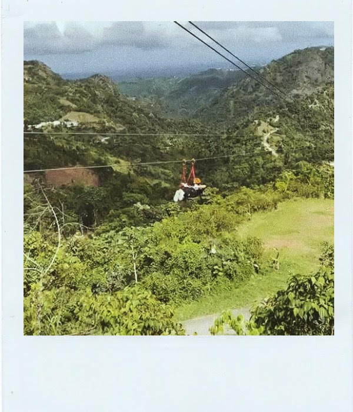
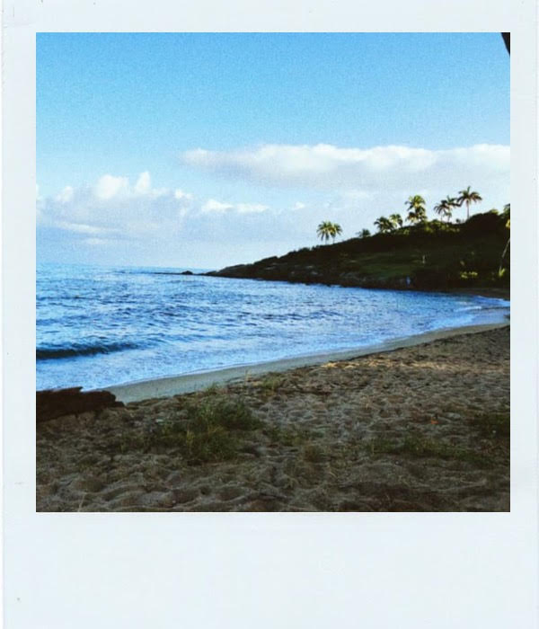
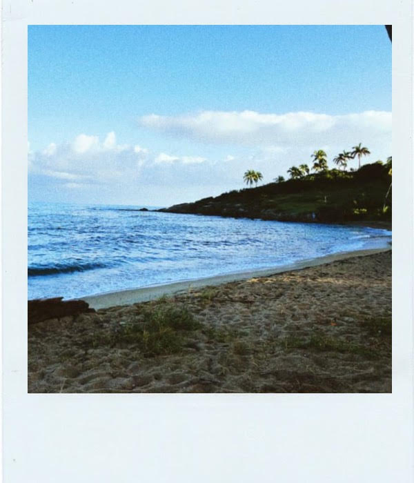
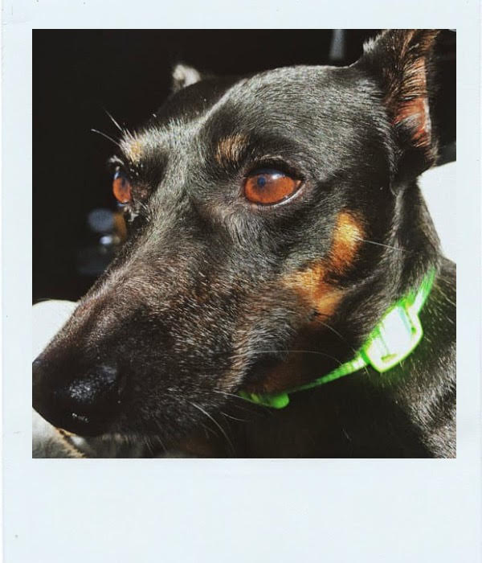
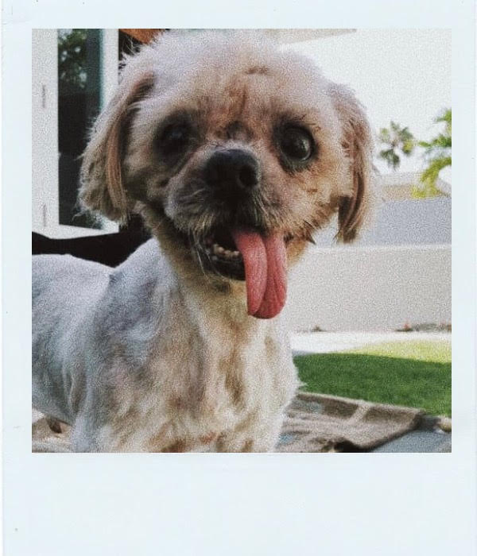
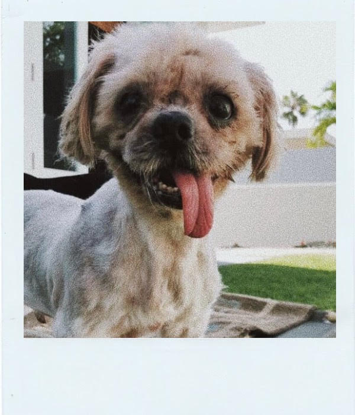

CLAUDIA'S GALLERY
“Photography takes an instant out of time, altering life by holding it still.” – Dorothea Lange
Something that inevitably brings me joy is photographing or recording moments. To me, photos are more than just a memory since they radiate a feeling of happiness, sadness, amongst others. I enjoy photographing and capturing the beauty of Puerto Rico since it is so diverse, from fascinating mountains to beautiful beaches. Other things that I like photographing is my pets (when they want their picture taken) and moments with my friends and family.
Landscapes
 

Animals
 
